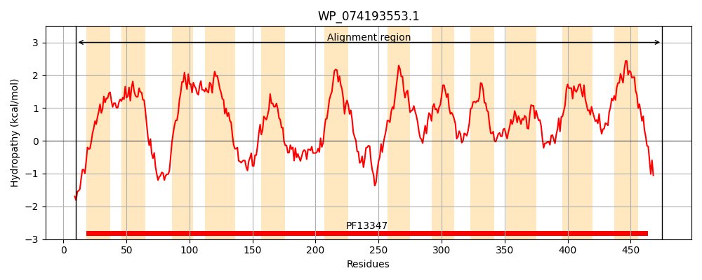
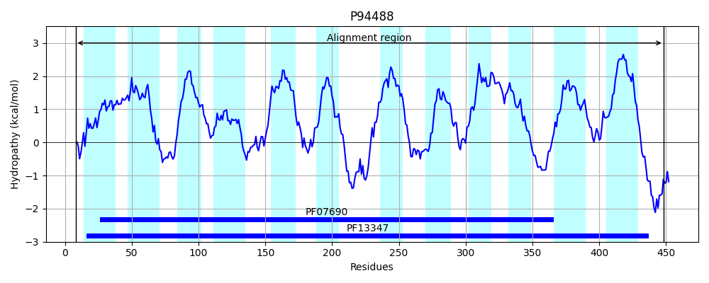
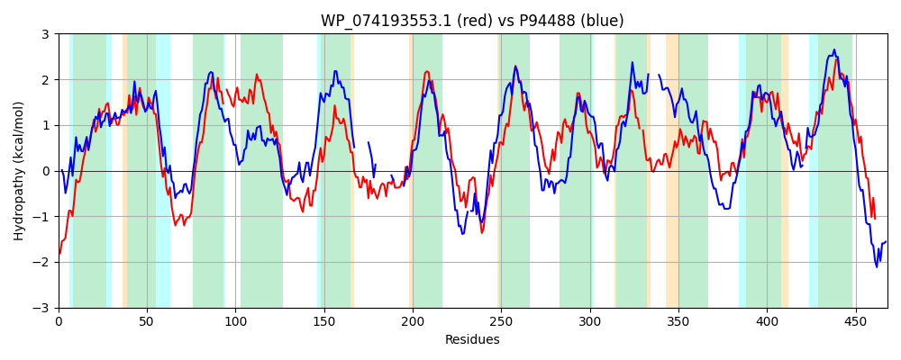

Hit Accession: P94488
Hit TCID: 2.A.2.3.2
Hit Description: gnl|BL_ORD_ID|11711 gnl|TC-DB|P94488|2.A.2.3.2 Hypothetical symporter IN GLNA-XYNB intergenic region - Bacillus subtilis.
Mach Len: 468
e:0.000000
Query TMS Count : 12
Hit TMS Count: 12
TMS-Overlap Score: 7.100000
Predicted Substrates:CHEBI:35312;pentoside
BLAST Alignment:
Score: 691 , Bit scores: 270 bits, E-value: 9.7e-86, Alignment length: 468, Percentage identity: 34
Query: 10 KLTRGERIGYGMGDFAQNLVFGTIGGFLALHMLTVNTISTATAGFIFLFVRIINVFWDPMVGTYVDKRTSKAGKYRPWLLRAGVPLVILSALLF-APIPGVKGSVAFAFIIYLALDLVYSLVNIPYGSLNASLTRDPESIDKLTSTRMMLANSANLLVYTLFPMFVQMAAPKDRSLKDTGFFGLELNLGNYTDPSANYAWFGVYAIYMIIGAVALFICYKFTKERVVATAEQTANVKTTDLFHELRHNRPLVILGMFFMLAFTFMFFMNTVNGFFNQFVVGHSEWMGAVGLVASIPGIAFPVFWPKLKKIFGKKGFFHLFLAMFIVGEL-LTYVWSREGMHDALWLAYIATFIKQWGLTSATGFMWALVPEVIAYGELKSGKRNAAIINAIMGLFFKIGFTIGGAIPLWLLAVYGFNESGAVQSASAIDGIIMTAVWIPIALAAISMVIIQVYPISDKHVTDINRQLD 475
K++ E++GY GDFA NL++ T+ +L V +S A AG +FL VRII+ DP +GT VD+ S+ G++RP+LL P VIL+ L F P G + +A+I Y+ L L Y+ +N+PYG+L +++TR+ + + +TS RM+ AN L+V P+ L DT GN + W I +IG L C+K TKERV + +K TD+F + R NRPLV+L +FF++ F N+V ++ + + + + GL+ S+P + F P+L + GKK + L + I+G L L +V ++L + I G +A G+MWAL+PE I YGE ++GKR +I AI+G FFK G +GG +P +L +G+ + A Q+ +A+ GI++T IP+ L ++++ I Y + +K ++ R+L+
Sbjct: 8 KISMVEKVGYASGDFACNLIYATVSTYLLFFYTDVFGLSAAAAGTMFLVVRIIDALADPFIGTIVDRTNSRFGRFRPYLLFGAFPFVILAILCFTTPDFSDMGKLIYAYITYVGLSLTYTTINVPYGALTSAMTRNNQEVVSITSVRMLFANLGGLVVAFFVPLLAAY-------LSDTS--------GN-----ESLGWQLTMGILGMIGGCLLIFCFKSTKERVTLQKSE-EKIKFTDIFEQFRVNRPLVVLSIFFIIIFGVNSISNSVGIYYVTYNLEREDLVKWYGLIGSLPALVILPFIPRLHQFLGKKKLLNYALLLNIIGLLALLFV-----PPSNVYLILVCRLIAAAGSLTAGGYMWALIPETIEYGEYRTGKRMGGLIYAIIGFFFKFGMALGGVVPGLVLDKFGYVANQA-QTPAALMGILITTTIIPVFLLVLALIDINFYNLDEKKYKNMVRELE 448 | Protein Hydropathy Plots: |
|---|
|  |  |
Pairwise Alignment-Hydropathy Plot:
|
|---|
|  |